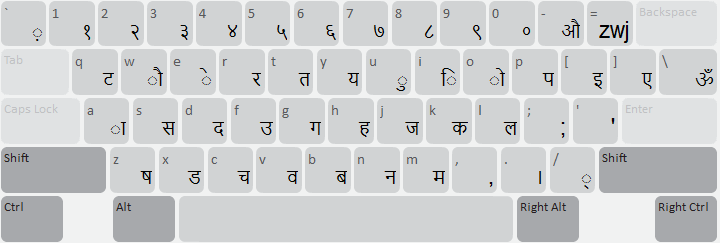
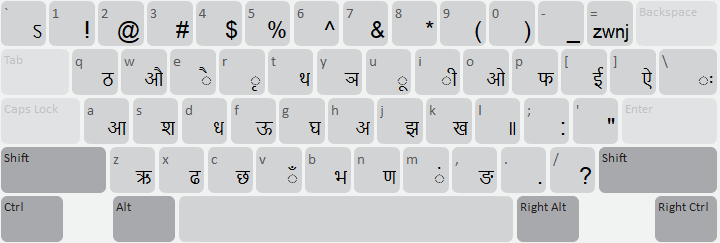

Start Using Nepali MPP Romanized
Authentic Nepali Romanized keyboard layout conforming strictly to the official Madan Puraskar Pustakalaya (MPP) & Language Technology Kendra (LTK) specification.
For desktop
Normal State

Shift State

Special Keys & Ligatures
- $ (Shift+4): Generates the official Nepali rupee symbol ligature रु. (U+0930 U+0941 U+002E).
- =: Zero-Width Joiner (ZWJ, U+200D).
- + (Shift+=): Zero-Width Non-Joiner (ZWNJ, U+200C).
- /: Halanta / Virama (्, U+094D).
- .: Nepali Danda (।, U+0964).
- L (Shift+l): Nepali Double Danda (॥, U+0965).
- ~ (Shift+`): Avagraha (ऽ, U+093D).
- `: Nukta (़, U+093C).